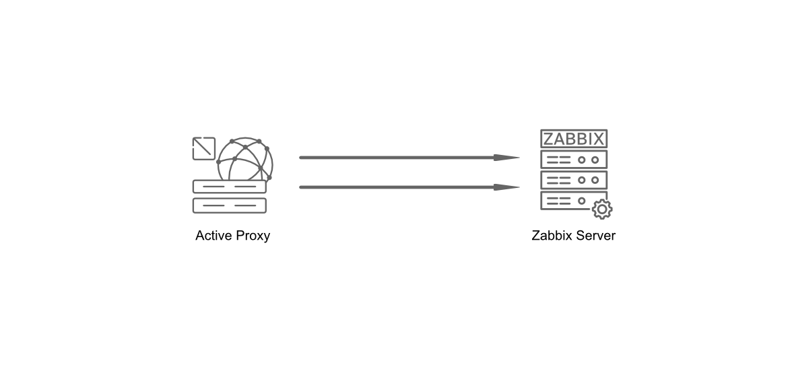

Proxy basics
In this chapter we will explain what a proxy is, why you may need or consider it, what the basic requirements are and what the difference is between Active proxies and Passive proxies.
What is a Zabbix Proxy
A Zabbix proxy is actually a kind of lightweight Zabbix server process that collects monitoring data from devices on behalf of the real Zabbix server. It's designed to offload the server by handling data collection tasks, which is particularly useful in distributed environments or when monitoring remote locations with limited connectivity.
The proxy gathers the requested performance and availability data from monitored devices, applications, and services, then forwards this information to the Zabbix server for processing and storage. This architecture helps reduce network traffic, simplifies network firewall configurations and improves the overall efficiency of your monitoring system.
So in short a Zabbix proxy can be used to:
- Monitor remote locations
- Monitor devices on separate network segments
- Monitor locations that have unreliable connections
- Offload the Zabbix server when monitoring thousands of devices
- Simplify the maintenance and management
Proxy requirements
If you'd like to set up a few proxies for testing or in your production environment, you'll need some Linux hosts for installation. While proxies are also available as containers (so you don't necessarily need full VMs), we'll use a VM in this demonstration to show the installation process. Don't worry, we'll cover container deployments as well.
Although proxies are generally lightweight, since Zabbix 4.2 they can perform item value preprocessing which can be CPU-intensive. Therefore, the number of CPUs and memory you'll need depends on:
- How many machines you'll be monitoring
- How many preprocessing rules you'll implement on your hosts
Proxy configuration updates
For a proxy to know what devices it has to monitor, it will receive configuration updates from the Zabbix server. They include:
- New or modified monitoring items, triggers, or templates assigned to the proxy.
- Changes to host configurations or data collection rules.
Before Zabbix 7.0, a full configuration synchronization was performed by proxies every 3600 seconds (1 hour) by default. With the introduction of Zabbix 7.0, this behavior changed significantly. Now, configuration synchronization occurs much more frequently, every 10 seconds by default, but it's an incremental update. This means that instead of transferring the entire configuration, only the modified entities are synchronized, greatly improving efficiency and reducing network overhead.
Upon initial proxy startup, a full configuration synchronization is still performed. Subsequently, both the server and the proxy maintain a revision of the configuration. When a change is made on the server, only the differences, based on these revision numbers, are applied to the proxy's configuration, rather than a complete replacement of the entire configuration as in older versions. This incremental approach allows for near real-time propagation of configuration changes while minimizing resource consumption.
Note
When working with a Zabbix proxy, it’s important to distinguish between two types of "configuration":
- Proxy Configuration Settings
- These are the local settings defined in the proxy’s configuration file. They control how the proxy operates.
- Configuration Updates from the Zabbix Server
-
These are dynamic updates pushed by the Zabbix server to the proxy. They include:
- New or modified monitoring items, triggers, or templates assigned to the proxy.
- Changes to host configurations or data collection rules.
Proxy throttling
Imagine that you need to restart your Zabbix server and that all proxies start to push the data they have gathered during the downtime of the Zabbix server.
This would create a huge amount of data being sent at once to the Zabbix server and possibly bring it to its knees in no time. Since version 6, Zabbix has added protection for this kind of situations. When the Zabbix server history cache is full the history cache write access is being throttled: Zabbix server will stop accepting data from proxies when history cache usage reaches 80%. Instead those proxies will be put on a throttling list. This will continue until the cache usage falls down to 60%. Now the server will start accepting data from the proxies one by one, defined by the throttling list. This means the first proxy that attempted to upload data during the throttling period will be served first and until it's done the server will not accept data from other proxies.
This table gives you an overview of how and when throttling works in Zabbix.
| History write cache usage | Zabbix server mode | Zabbix server action |
|---|---|---|
| Reaches 80% | Wait | Stops accepting proxy data, but maintains a throttling list (prioritized list of proxies to be contacted later). |
| Drops to 60% | Throttled | Starts processing throttling list, but still not accepting proxy data. |
| Drops to 20% | Normal | Drops the throttling list and starts accepting proxy data normally. |
This may cause delays in detection of problems, as you will have to wait for all relevant data to be received and processed by the Zabbix server; but you won't lose any historical data.
Active versus Passive proxy
Zabbix proxies have been available since Zabbix 1.6. At that time they where available only as what we know today as Active proxies. Active means that the proxy will initiate the connection by itself to the Zabbix Server. In version 1.8.3 passive proxies where introduced. This allowes the server to connect to the proxy instead of the other way around.
As mentioned before Zabbix agents can be both active and passive however proxies cannot be both so we have to choose the way of the communication when we configure a proxy.
Active/Passive agent on Active/Passive proxy ?
Remember that choosing the proxy mode active or passive has no impact on how Zabbix agents can communicate with this proxy. It's perfectly fine to have an active proxy and a passive agent working together.
Active proxy
In active mode, the proxy takes full control of its operational settings. This includes managing when it checks for new configuration updates and when it sends collected data to the server.
It’s important to note that the key settings for an active proxy are defined exclusively in the Zabbix proxy configuration. Any adjustments to these parameters should be made directly within the proxy configuration files.
These are the proxy configuration settings you will need to set in active mode:
ProxyMode:0- Sets the proxy in 'Active' modeServer: IP or DNS of the Zabbix serverHostname: Proxy name - this needs to be exactly the same as configured in the frontend.ProxyOfflineBuffer: How long we like to keep data in the DB (in hours) if we can't reach the Zabbix server.ProxyLocalBuffer: How long we like to keep data in the DB (in hours) even when it is already sent to the Zabbix server.ProxyConfigFrequency: ReplacesConfigFrequencyin earlier versions and defines how often we request configuration updates (every 10 seconds) from the Zabbix server.DataSenderFrequency: How often data is sent to Zabbix server (every second).
When configuring resources for an Active proxy, it’s important to account for its connection behavior with the Zabbix server. During operation, the proxy can utilize up to two trapper processes on the server:
- One trapper is dedicated to sending collected data to the server.
- The other trapper is reserved for retrieving configuration updates.
Tip
To ensure smooth communication, it is considered best practice to allocate two trapper processes per Active proxy on the Zabbix server. This configuration optimizes performance and prevents potential bottlenecks.

3.1 Active proxy communication
Passive proxy
In contrast to an active proxy, a proxy in passive mode will have its operational settings controlled by the Zabbix server.
Hence, configuring passive proxies requires changes in in both the Zabbix server and the Zabbix proxy configuration files as it is now the server that controls when and how proxy data is requested by making use of pollers.
The most important setting we can find back in the proxy configuration file are:
ProxyMode:1- Sets the proxy in 'Passive' modeServer:IP or DNS of the Zabbix serverProxyOfflineBuffer: How long we like to keep data in the DB (in hours) if we can't reach the Zabbix server.ProxyLocalBuffer: How long we like to keep data in the DB (in hours) even when it is already sent to the Zabbix server.
And finally the config settings we need to change on our Zabbix server:
StartProxyPollers: The number of pollers to contact proxies.ProxyConfigFrequency: ReplacesConfigFrequencyand defines how often Zabbix server will sent configuration changes to all proxies.ProxyDataFrequency: How often Zabbix server will request monitored data from our proxies.
Tip
It is not required for StartProxyPollers to be equal to the number of
passive proxies you have as one poller can poll multiple proxies. The
recommended value however depends on your environment and workload. If you
have multiple passive proxies and experience delays in configuration updates
or incoming item values, you may increase this value. However, it is a good
practice to start with 1, monitor the performance and adjust in accordance.
Zabbix provides out-of-the-box templates for monitoring Zabbix server and
Zabbix proxies internal metrics. Make sure to use them and closely watch
the value of the zabbix[proxy_history] item on the proxies which represents
the number of values the proxy has received that are yet to be sent to the
Zabbix server.
3.2 Passive proxy communication
Proxy runtime control options
Just like the Zabbix server our proxy supports runtime control options always
check latest options with the --help option. But here is a short overview of
options available to use.
zabbix_proxy --runtime-control housekeeper_execute-
Triggers the immediate execution of the Zabbix housekeeper process on the proxy. The housekeeper is responsible for cleaning up outdated data (e.g., old history, trends, or events) according to the configured retention periods in Zabbix. This command forces the housekeeper to run now, instead of waiting for its scheduled interval.
zabbix_proxy --runtime-control log_level_increase=target-
Increases the log verbosity level for a specific target process (e.g., by type like
configuration syncer,housekeeper,icmp pinger, by type and number likepoller,3or by PID). This is useful for debugging or troubleshooting, as it provides more detailed log output for the specified target. For a full list of available targets, check the man-page ofzabbix_proxy. Example:log_level_increase="http poller"would make http poller-related logs more verbose. zabbix_proxy --runtime-control log_level_decrease=target-
Decreases the log verbosity level for a specific target, reducing the amount of log output generated. This is helpful to lower noise in logs after debugging or to optimize performance by reducing I/O overhead. Example:
log_level_decrease=trapper,2would reduce the verbosity of trapper-related logs of the second trapper process. zabbix_proxy --runtime-control snmp_cache_reload-
Forces the proxy to reload its SNMP cache. This is useful if you’ve made changes to SNMP configurations (e.g., updated community strings, OIDs, or device IPs) and want the proxy to immediately pick up the new settings without restarting the entire service.
zabbix_proxy --runtime-control diaginfo=section-
Generates diagnostic information for a specific section of the proxy’s operation. This is typically used for troubleshooting or performance analysis. The section parameter can target areas like historycache, preprocessing or locks. Example:
diaginfo=preprocessingwould provide detailed statistics about the preprocessing manager.
Proxy firewall
Our proxies work like small Zabbix servers so when it comes to the ports to connect to agents, SNMP, ... nothing changes, all ports need to be configured the same as you would on a Zabbix server.
When it comes to port for the proxy it depends on our proxy being active or
passive.
- Active Proxy: Zabbix server needs to have port
10051/tcpopen so proxy can connect. - Passive Proxy: Needs to have port
10051/tcpopen on the proxy so that theservercan connect to the proxy.
Do note that for an active Zabbix Agent or Zabbix Sender to communicate with
your proxy, wether it is an active or a passive one, this will require port
10051/tcp to be open on your proxy server: